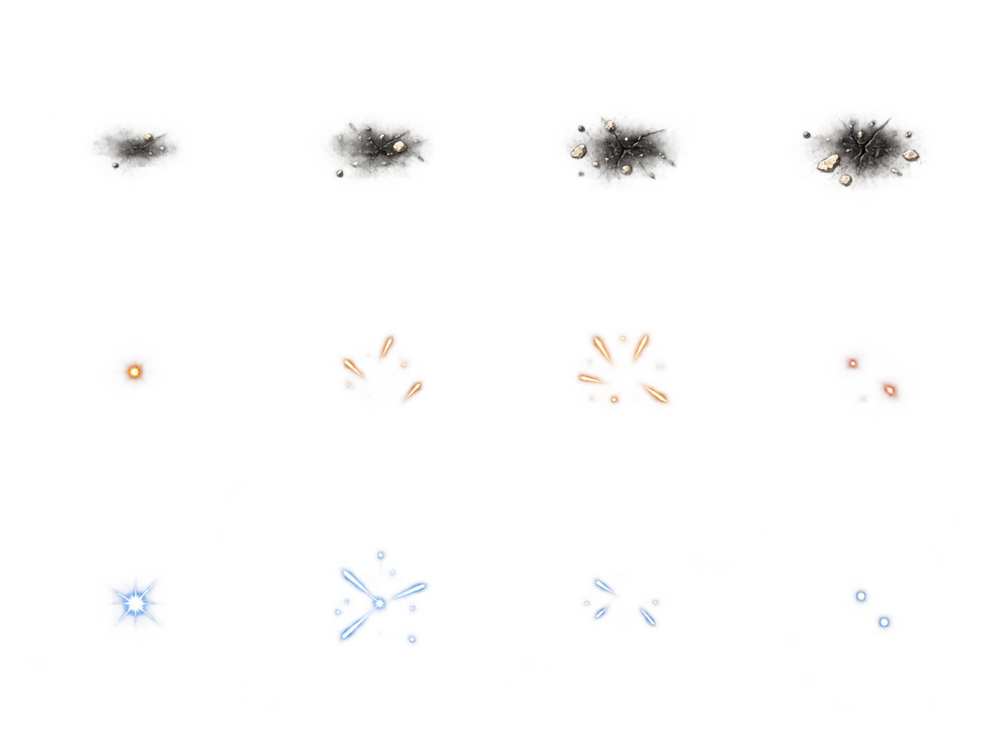
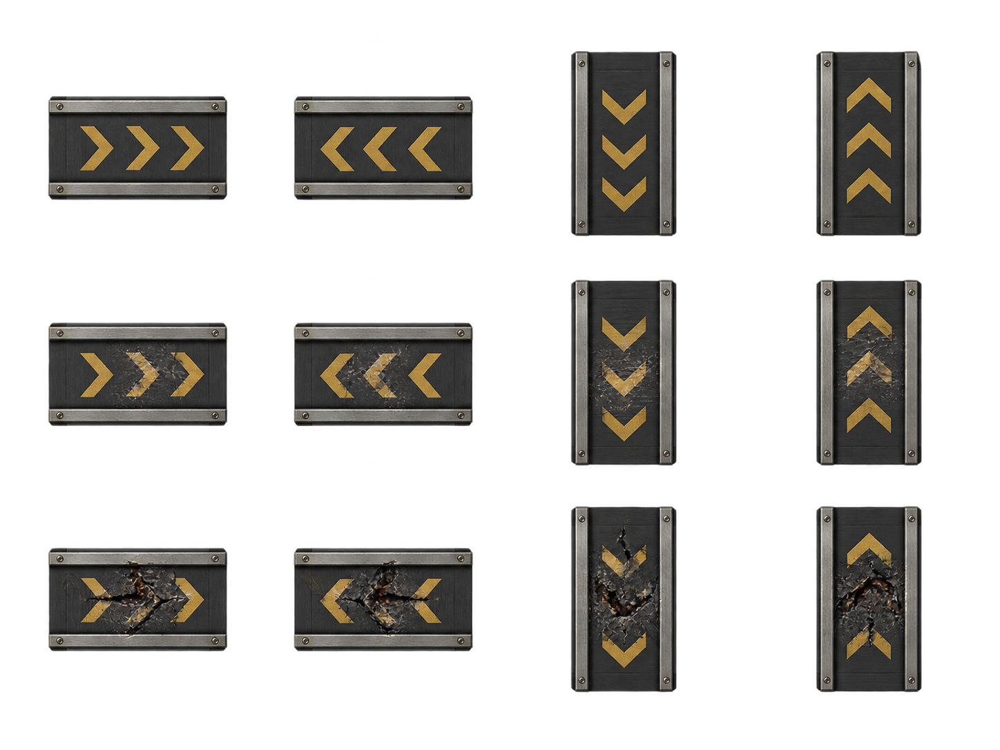
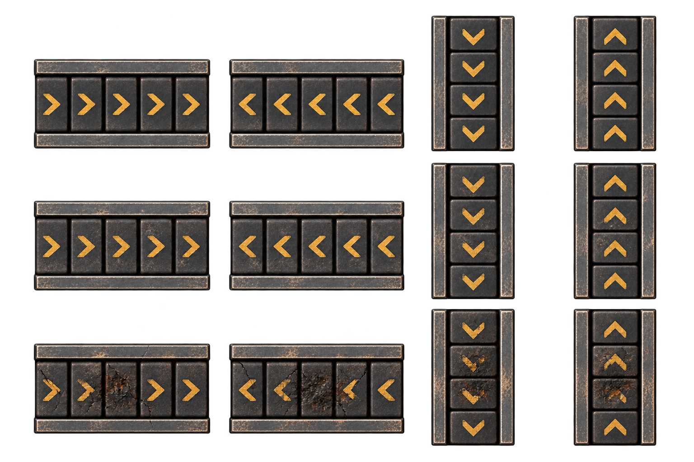

Candidates only. No runtime promotion. Equal-cell effect crops are preview assumptions, not registered frames.
Overheat and repair sequence preview, 8 fps. Stops for reduced motion or hidden tab; no gameplay binding.


